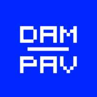

|
 REPOZITORIJ za Kodi Vključuje dodatke: - plugin.rtvslo.live - - plugin.rtvslo.podcast - |
| Za poln dostop do vsebin v arhivu si pridobite uporabniško ime in geslo na https://www.rtvslo.si/registracija in oboje vnesite v konfiguracijo dodatka. |
|
--- |
| Pomembno obvestilo! Verzije Kodi Leia v18.0 - v18.1 streamov RTVSLO (in morda še katerih drugih) ne predvajajo pravilno. Zaenkrat preverjeno pravilno deluje samo v17.6 Krypton. |
|
--- |
|
2019 GITHUB |